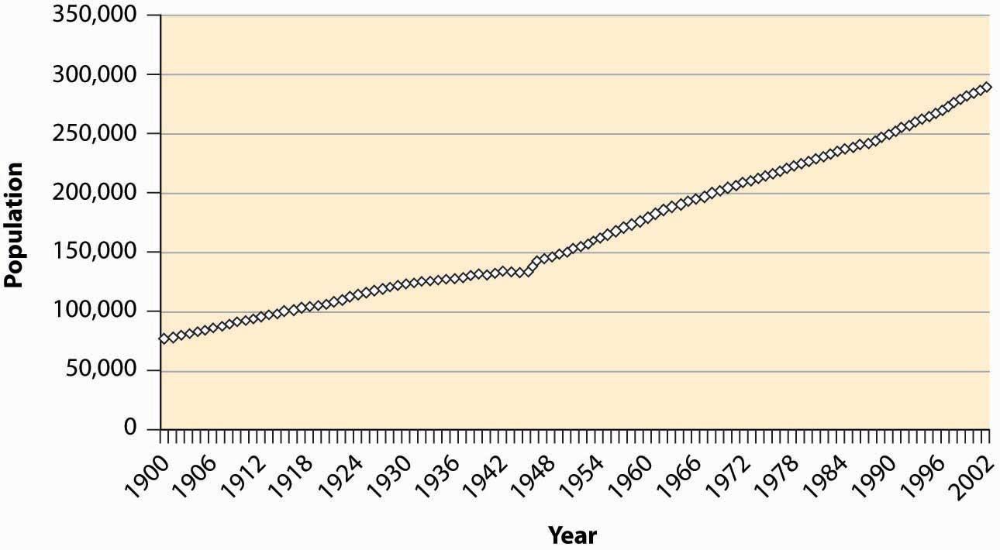
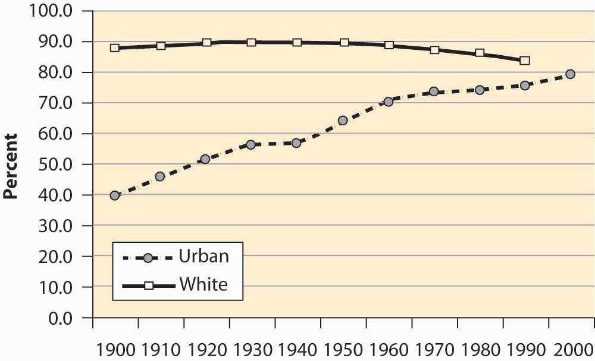
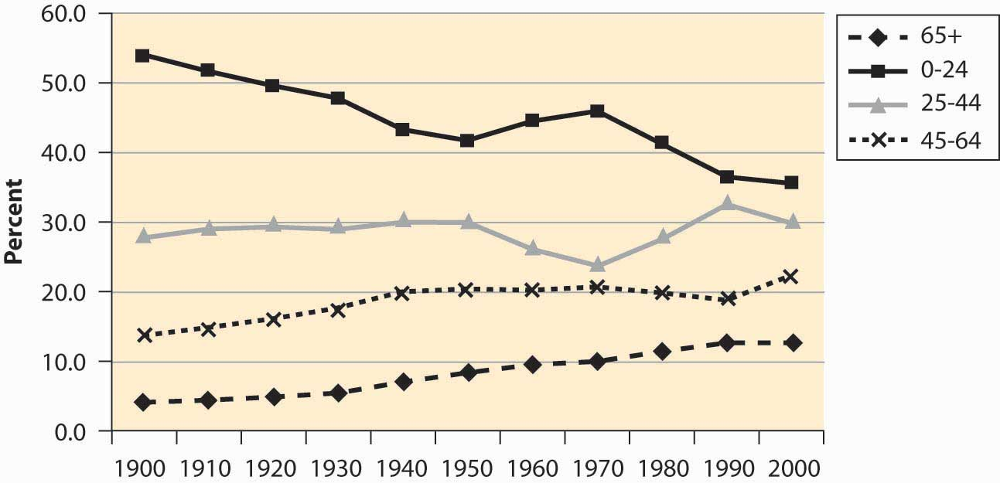
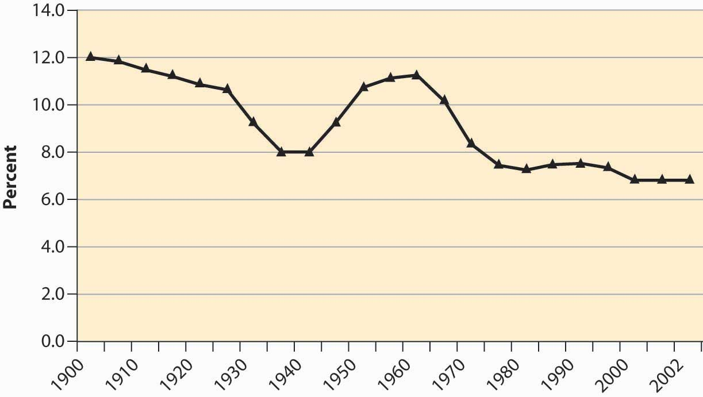
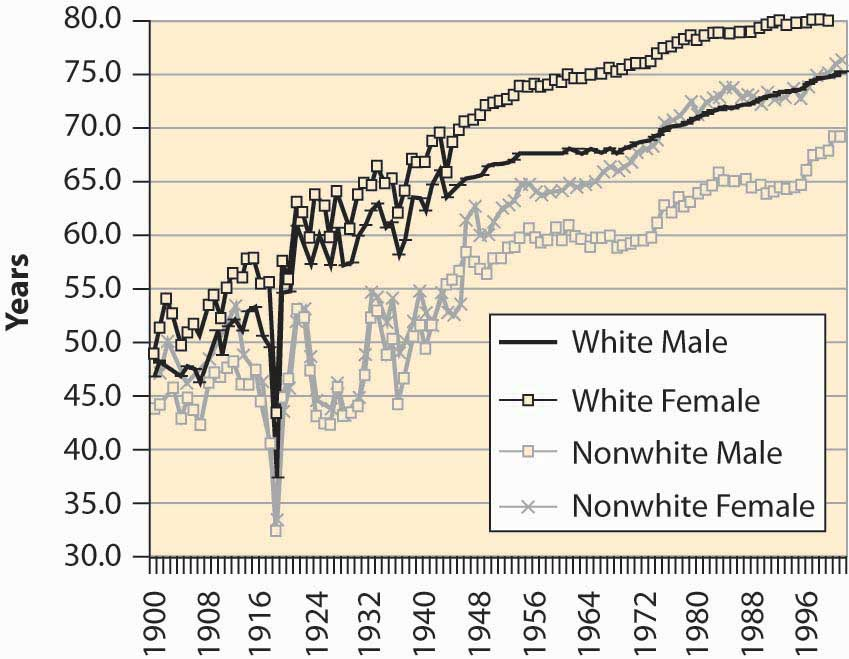
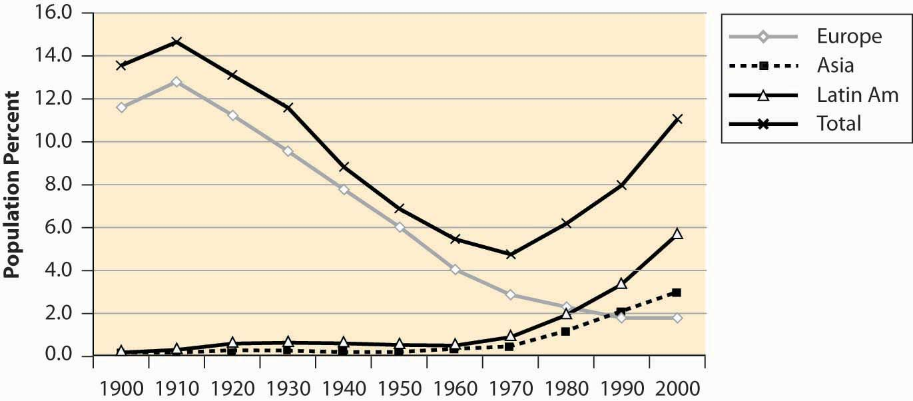
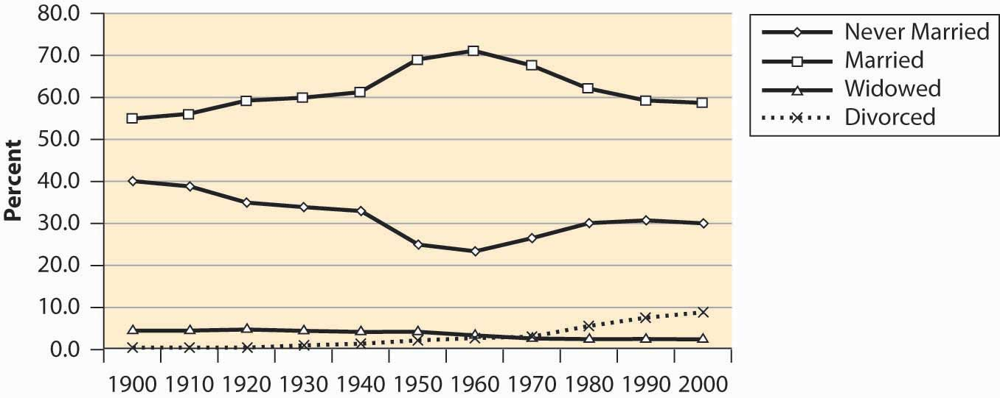
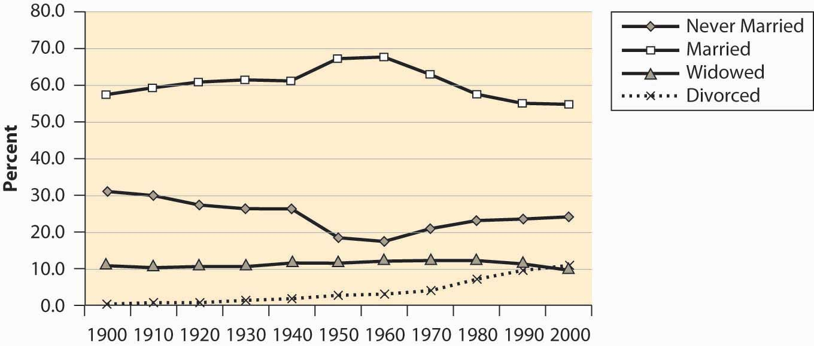
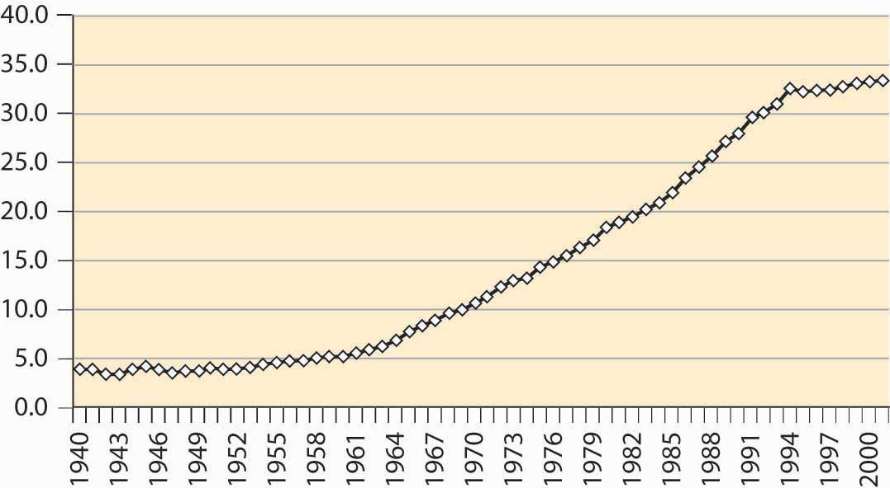

There are about 300 million people in the United States, up from 76 million in 1900.
Figure 4.1 U.S. resident population
During the last century, the U.S. population has become primarily an urban population, growing from 40% to 80% urban. The population is primarily white, with 12%–13% African American and 4% classified as other. These proportions are relatively stable over the century, with the white population falling from 89% to 83%. The census is thought to understate minority populations because of greater difficulties in contacting minorities. The census does not attempt to classify people but instead accepts people’s descriptions of their own race.
Figure 4.2 U.S. urban and white population
The U.S. population has been aging significantly, with the proportion of seniors (over 65 years of age) tripling over the past century, and the proportion of young people dropping by over one-third. Indeed, the proportion of children between 0 and 5 years old has dropped from 12.1% of the population to under 7%.
Figure 4.3 Population proportions by age group
The baby boomA dramatic increase in births for the years 1946 to 1964.—a dramatic increase in births for the years 1946–1964—is visible in Figure 4.3 "Population proportions by age group" as the population in the 0–24 age group begins increasing in 1950, peaking in 1970, and then declining significantly as the baby boom moves into the 25- to 44-year-old bracket. There is a slight “echo” of the baby boom, most readily seen by looking at the 0–5 age bracket, as in Figure 4.4 "Proportion of population under age 5".
Figure 4.4 Proportion of population under age 5
The aging of the American population is a consequence of greater life expectancy. When social security was created in 1935, the average American male lived to be slightly less than 60 years old. The social security benefits, which didn’t start until age 65, thus were not being paid to a substantial portion of the population.
Figure 4.5 U.S. life expectancy at birth
Figure 4.5 "U.S. life expectancy at birth" shows life expectancy at birth, thus including infant mortality. The significant drop in life expectancy in 1918—to nearly 30 years old for nonwhites—is primarily a consequence of the great influenza, which killed about 2.5% of the people who contracted it and killed more Americans in 1918 than did World War I. The Great Depression (1929–1939) also reduced life expectancy. The steady increase in life expectancy is also visible, with white females now living 80 years on average.
Figure 4.6 U.S. immigrant population (percentages) by continent of origin
It is said that the United States is a country of immigrants, and a large fraction of the population had ancestors who came from elsewhere. Immigration into this United States, however, has been increasing after a long decline, and the fraction of the population that was born in foreign countries is about 11%—one in nine.
Figure 4.7 National origin of immigrants, 1900–2000

The majority of immigrants during this century came from Europe, but immigration from Europe has been declining for most of the century, while immigration from Asia and Latin America has grown substantially. Figure 4.7 "National origin of immigrants, 1900–2000" aggregates the total country-of-origin data over the century to identify the major sources of immigrants.
One hears a lot about divorce rates in the United States, with statements like “Fifty percent of all marriages end in divorce.” Although it has grown, the divorced population is actually a small fraction of the population of the United States.
Figure 4.8 Male marital status (percentages)
Figure 4.9 Female marital status (percentages)
Marriage rates have fallen, but primarily because the “never married” category has grown. Some of the “never married” probably represent unmarried couples, since the proportion of children from unmarried women has risen fairly dramatically. Even so, marriage rates are greater than they were a century ago. However, a century ago there were more unrecorded and common-law marriages than there probably are today.
Figure 4.10 Births to unwed mothers (percentages)
While we are on the subject, however, the much-discussed crisis in teenage pregnancies doesn’t appear to be such a crisis when viewed in terms of the proportion of all births that involve a teenage mother, illustrated in Figure 4.11 "Births to women age 19 or less (percentages)".
Figure 4.11 Births to women age 19 or less (percentages)